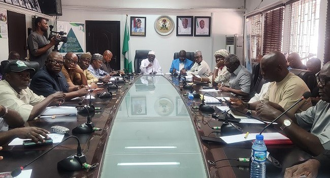

FG Approves Six-Month ₦70,000 Transport Support For Workers

The Federal Government has approved a ₦70,000 transport intervention for workers across all levels for six months, starting in November 2026. The decision followed a conciliation meeting with the Nigeria Labour Congress (NLC), convened by the Federal Ministry of Labour and Employment in Abuja on October 27 to discuss issues raised by organised labour.
The government also approved peculiar allowance arrears dating from May 1, 2026. Payments are scheduled to begin in November and be made in three equal monthly instalments. The parties did not agree on when to implement the national minimum wage, but agreed to establish a Minimum Wage Negotiation Committee and have it begin work immediately.
The meeting addressed other outstanding payments. The government said 19 months of health workers’ allowance arrears would be paid within three months from December 2026. For agricultural workers’ hazard allowances, the Ministry of Agriculture and Food Security has submitted beneficiary details and cost estimates for verification by the National Salaries, Incomes and Wages Commission. That review is expected to take two weeks, after which the commission will provide an implementation template.
The commission also expects to complete updated cost estimates for an adjustment to the Consolidated Health Salary Structure within three weeks. The figures will then go to the Presidential Committee on Salaries for a decision. A request for tax relief for workers will be referred to the National Executive Council, as taxation is a statutory matter.
The meeting was chaired by Labour Minister Dr Muhammad Maigari Dingyadi, with NLC President Joe Ajaero leading the labour delegation. It followed an earlier conciliation session on October 22. Government and labour representatives agreed to meet again after one month to review progress, and called on state and local governments to take part in the intervention process. Unions were urged to advocate for implementation at their respective levels.
Source: Channels TV